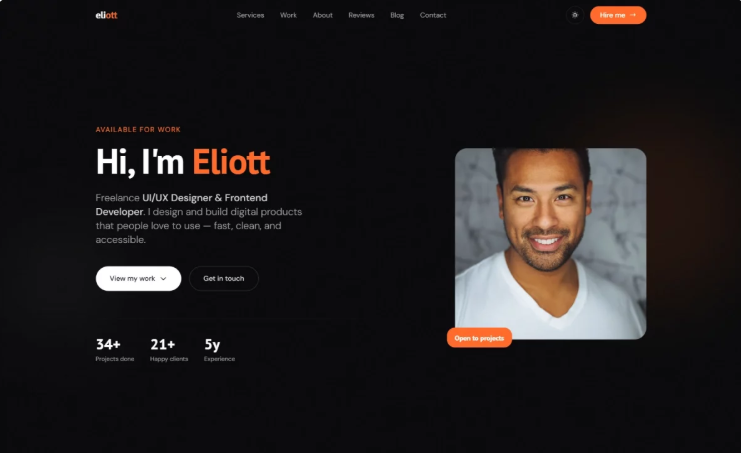

Screen Visual AI assistant
A Windows desktop tool that uses a Gemini Vision+Text model to analyze screenshots and user prompts.
PyQt5
google-generativeai
Xenawi
Software Engineer & Product-Focused Creator
Delivering reliable digital products with clarity
Focused on Django, Django REST Framework, automation, and machine learning workflows. Explore my work, skills, and GitHub repositories.
Experience crafting backend APIs, automation tooling, and data workflows.
Focus on Django DRF, Pandas-based ML exploration, and productivity automation.
About me
I turn complex ideas into usable digital products through clean code, rapid iteration, and thoughtful architecture. My work emphasizes maintainable backend systems and automation that saves time.
Currently active on GitHub with repositories showing backend systems, automation, and data workflows.
Strengths: Django API design, Python automation, and data-focused engineering.
Visit my GitHub profile →Tech Stack & Skills
Projects
A Windows desktop tool that uses a Gemini Vision+Text model to analyze screenshots and user prompts.
A machine learning model for predicting forex market trends based on historical data and technical indicators.
An intelligent game bot built with Python, OpenCV, and a trained AI model (crossing_model.h5) that plays the Chicken Road game automatically — detecting when it's safe to jump, when to cash out, and when to wait.

XenDev is a Django-based web application that provides a portfolio and client project management experience with user authentication, admin content management, and staff-only project editing features.
An intelligent AI-powered GUI application designed to provide real-time visual analysis and answering exams assistance using Google's Gemini Vision API.
Contact
Whether you need backend APIs, automation tooling, or data workflow support, I’m available to collaborate.